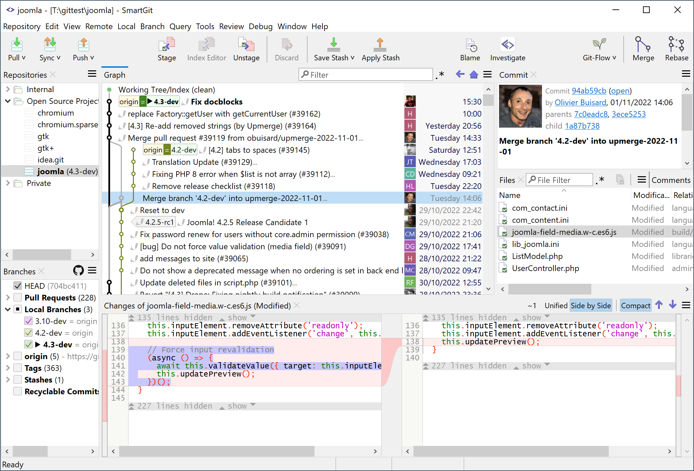

<section class="page-section padded-top-s1-6x padded-top-s3-12x padded-bottom-s1-4x padded-bottom-s3-8x">
    <div class="flex-grid flex-grid--s1-align-start flex-grid--s5-align-middle">
        <div class="flex-column-s4-6 hidden-lte-s3">
            
        </div>

        <div class="flex-column-s1-12 flex-column-s4-4 flex-column-s4-push-1">
            <div class="panel__body">
                <a href="."></a>

                <p>
                    <strong>Get your commit done.</strong><br>SmartGitは <a class="extLink"
                                                                            href="https://www.slant.co/options/7568/~smartgit-review"
                                                                            target="_blank">slant.co</a>で最も人気のあるGit用GUIクライアントです。
                </p>
                <p>
                    世界中の100,000人以上の開発者がSmartGitを信頼しています。
                </p>
                <p>
                    SmartGitは、GitHub、Bitbucket、GitLab、Azure DevOpsをサポートしています。
                </p>
            </div>

            <footer class="panel__footer">
                <div class="flex-grid flex-grid--nested flex-grid--s1-reverse flex-grid--s2-normal">
                    <div class="flex-column-s1-12 flex-column-s2-6">
                        <a class="button button--primary button--medium button--outlined spread-x-s1"
                           href="purchase.html">購入</a>
                    </div>
                    <div class="flex-column-s1-12 flex-column-s2-6 spaced-bottom-s1-1x spaced-bottom-s2-0x">
                        <a class="button button--primary button--medium button--filled spread-x-s1"
                           href="https://www.syntevo.com/smartgit/download/">ダウンロード</a>
                    </div>
                </div>
            </footer>
        </div>
    </div>
</section>